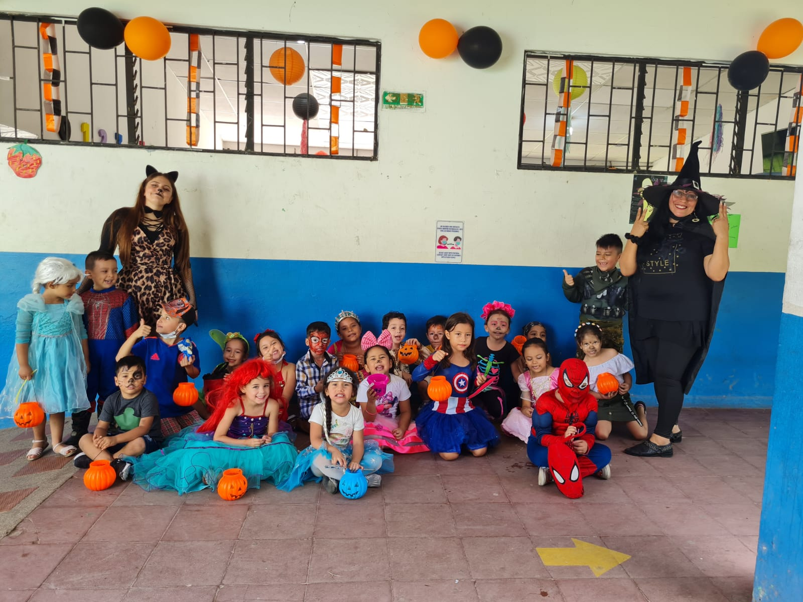
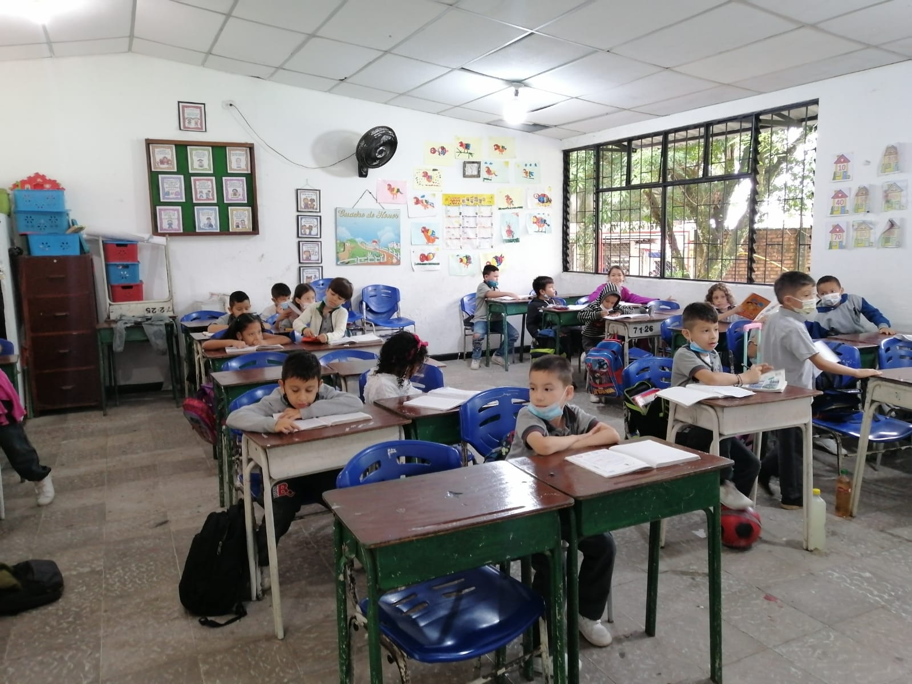
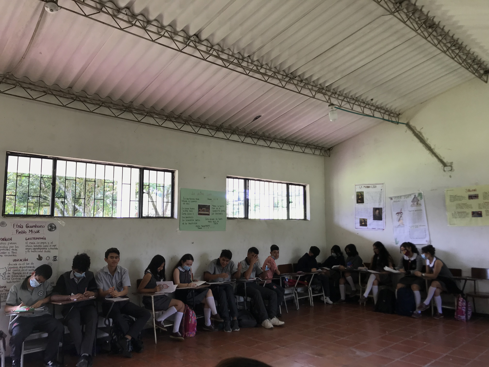
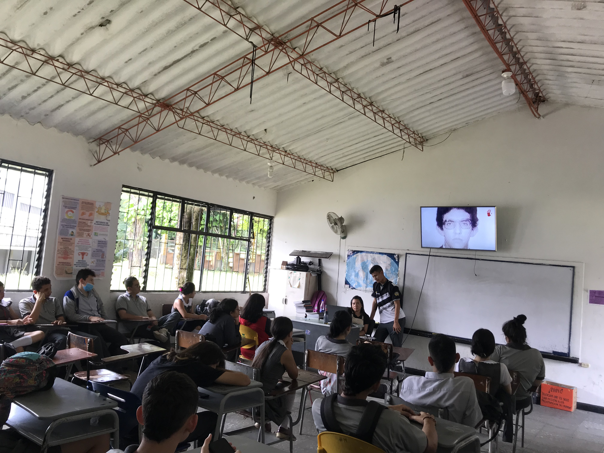

Instalaciones del colegio
Parte Trasera de los salones
Instalaciones del colegio
Edificio Nuevo
Instalaciones del colegio
Polideportivo
Instalaciones del colegio
Sendero hacia la cafeteria
Instalaciones del colegio
Parqueadero

Instalaciones del colegio
Parque Central
Preescolar: Grado Transición
Actualmente el colegio Juan B Caballero medina Presta el servicio de preescolar unicamente en el grado Transición ya que, segun el ministerio de educacion nacional, su oferta es de carácter obligatorio más no es pre-requisito para ingresar al curso primero de primaria.Y su oferta es para niños con 5 años recien cumplidos.
Caracteristicas del Servicio:
- Doncente Titular Profesional en educacion infantil y primera infancia.
- Grupos Maximos de 25 niños.
- Horario: 7:30am a 11:30 am.
Primaria: Grado 1° a 5°
En este momento el colegio Juan B Caballero medina Presta el servicio de primaria en todos los grados es decir, de grado Primero a Quinto, caracterizandonos por un componente pedagógico que se fundamenta en calidad, educación integral, valores y docentes idóneos para lograrlo.
Caracteristicas del Servicio:
- Doncente Titular Profesional Licenciado.
- Grupos Maximos de 35 niños.
- Horario: 1:00 pm a 6:00 pm.
Basica: Grado 6° a 9°
Principalmente el colegio Juan B Caballero medina Presta el servicio de basica secundaria que está formado por todos los grados que conforman el ciclo; es decir, 6°, 7°, 8° y 9°.Teniendo claro que se utiliza una metodología de enseñanza un poco diferente comparada con la de primaria, en el sentido de que en secundaria la enseñanza de las asignaturas está a cargo de un docente en particular, con la gran ventaja de que todos los maestros partícipes del proceso son licenciados titulados y/o profesionales en una disciplina afín con el área de enseñanza. Asi mismo, ha de destacar el proceso de diagnóstico y preparación que se inicia desde el grado noveno con miras a la escogencia del programa de preferencia que los estudiantes realizan para iniciar la formación con el Servicio Nacional de Aprendizaje Sena en la media tecnica.
Caracteristicas del Servicio:
- Doncente Particular en cada una de las 10 Asignaturas Licenciado/Profesional.
- Grupos Maximos de 40 niños.
- Horario: 6:15 am a 12:15 pm.
Media: Grado 10° a 11°
Conformada por los grados Décimo (10°) y Undécimo (11°). En este nivel la institución Juan B Caballero Mediana va forjando en los estudiantes una mentalidad de responsabilidad y dinamismo, en la que ven la necesidad de buscar su propia formación para tener en el futuro una mayor oportunidad de servir a la comunidad y de vivir mejor en este mundo de globalización y competitividad.
El nivel media en nuestra institución es de carácter academico, pero tambien técnico, con especialidad en Diseño E integración De Multimedia y Conservacion de Recursos Naturales, además, se les imparte las áreas obligatorias y fundamentales del que habla el artículo 23 de la Ley 115.
Caracteristicas del Servicio:
- Doncente Particular en cada una de las 10 Asignaturas Licenciado/Profesional.
- Grupos Maximos de 40 niños.
- Horario: 6:15 am a 12:15 pm.
Media Tecnica: Convenio SENA
.jpg)
Técnico En Diseño E integración De Multimedia
.jpg)
Técnico En Conservación de Recursos Naturales
La integración del Sena con la Educación Media es un conjunto de acciones orientadas al fortalecimiento de la Educación Media en Colombia mediante la integración de programas del SENA con las instituciones Educativas, para que los estudiantes de los grados 9°, 10° y 11° adquieran y desarrollen competencias laborales, que facilite su continuidad en la cadena de formación o su vinculación al sector productivo.
En este proceso hemos contado con el apoyo del Ministerio de Educación Nacional, la Secretaría de Educación Municipal y El Servicio Nacional de Aprendizaje SENA. Los dos primeros han orientado a la Institución Educativa para incorporar en el PEI, el programa de formación para el trabajo y que éste sea coherente con el plan de desarrollo regional, y el Servicio Nacional de Aprendizaje Sena se ha encargado de actualizar técnica y pedagógicamente a los docentes de la institución, asesorar en la adecuación de ambientes educativos de formación para el trabajoy realizar el acompañamiento y apoyo en la ejecución del programa entre otros. La institución Juan B Caballero Medina como entidad encargada de suministrar el material humano y logístico se ha comprometido también, entre otras cosas, incluir los programas de formación para el trabajo en el PEI, contar con infraestructura y docentes técnicos, establecer alianzas con empresas que permitan la práctica para los aprendices, impartir los programas de formación para el trabajo con la metodología y criterios de calidad establecidos por el SENA, hacer seguimiento a aprendices en etapa práctica, hacer transferencia de diseños y medios didácticos de programas a articular, actualizar técnica y pedagógicamente a los docentes de las institución, asesorar en la adecuación de ambientes educativos de formación para el trabajo, así como acompañar y apoyar en la ejecución del programa, evaluación y certificación de los aprendices.
En la actualidad nuestros estudiantes se encuentran en la línea de formación técnica, específicamente en dos programas,Diseño E integración De Multimedia y Conservacion de Recursos Naturales, los cuales tienen una duración de dos (02) años, iniciado desde el grado décimo de Educación Media y el cual debe terminar de manera paralela con el grado undécimo. El tiempo dedicado a la formación es de ocho (12) horas semanales presenciales, en el que los aprendices con orientación directa del instructor del Sena y el docente par de la institución.
Caracteristicas del Servicio:
- Intructor/a del SENA y Docente Par por parte de la Institución.
- Grupos Maximos de 40 Aprendices.
- Horario: 2:00 pm a 6:00 pm 3 días a la semana.
Historia
Nuestra institucion fue creada en el barrio Las Américas, impulsado por el talento y empeño de un grupo de señoras, líderes comunitarias del sector, quienes adelantaron y promovieron su creación con el interés de que los niños y jóvenes pudiesen estudiar hasta terminar la educación media. En consecuencia, el 2 de febrero del año 1993: fue nombrado el licenciado Luís Heberto Leyton Brito, como Rector para que adelantara el proceso de matrícula y se pudiese hacer el nombramiento de los educadores. El Colegio inició con 135 alumnos con tres grados de sexto y uno de séptimo.
Los primeros profesores en llegar a la institución en el año 1993 fueron: Lic. Héctor Fabio Leal Villalba, Lic. Luís Enrique Ballén, Lic. Aída Yaneth Bacca Beltrán, Lic. Nelson Giovanni Moreno Ruiz, Lic. Martha Cecilia Martínez Baquero, Lic. Ana Belén Pérez de Umaña, Lic. Bernardita Moya González, secretario Pagador Benjamín Ricardo Rodríguez Vera. El licenciado Luís Heberto Leyton Brito, primer rector del colegio, emprendió asesorado por la secretaria de Educación en la persona del Lic. Jesús María Gómez Gómez y la secretaria de Obras Públicas en la administración como alcalde Municipal, doctor Juan de Dios Bermúdez Díaz. La consecución del terreno, la elaboración del plan general, la asignación del presupuesto y las licencias pertinentes para su construcción.
El Colegio Juan Bautista Caballero Medina, no se pudo construir en el barrio Las Américas, como era la intención del grupo de padres de familia que lideraba esta bonita idea y el deseo del señor Gobernador doctor Omar Baquero Soler, era de no hacer colegios con hacinamiento, sino que se pudiera contar con espacios pedagógicos, recreativos y locales que proporcionaran a los alumnos y maestros un sano, amable y acogedor ambiente de trabajo. Fue así como se procedió a su legalización y construcción del mismo en un terreno cercano al barrio Las Américas, actualmente barrio Llano lindo. Hoy en día el colegio cuenta con mas de 500 alumnos, liderados por el señor Rector Alvaro Hernandez Mora desde el año 2004.
Misión
Formar ciudadanos moralmente autónomos, ética y políticamente responsables de sus deberes y derechos civiles. Laboralmente competentes y comprometidos en el mejoramiento de las condiciones de vida en su entorno.
Visión
Ser reconocidos como una comunidad educativa en la que el desarrollo moral integral sea la base del crecimiento personal de sus escolares y de su proyección en sociedad. Personas comprometidas con su proyecto de vida, en la búsqueda de soluciones a los problemas de su entorno.